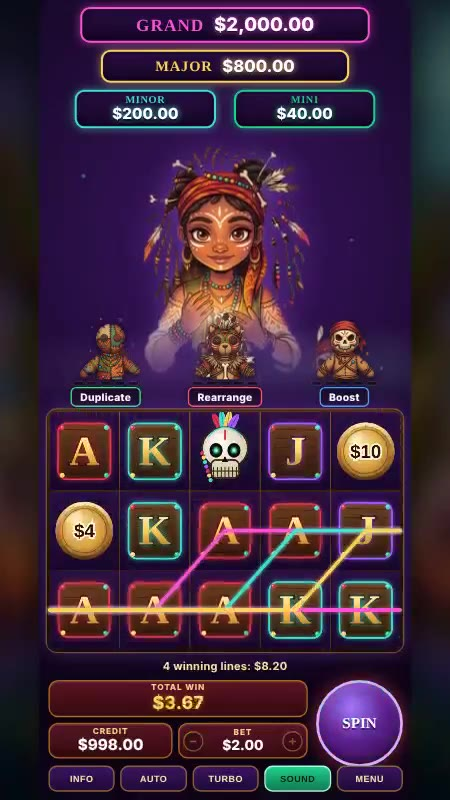
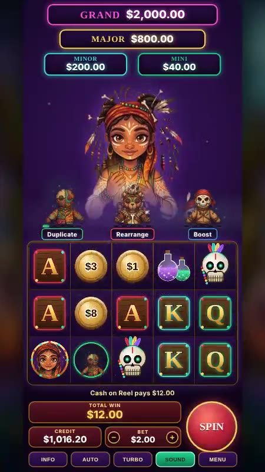
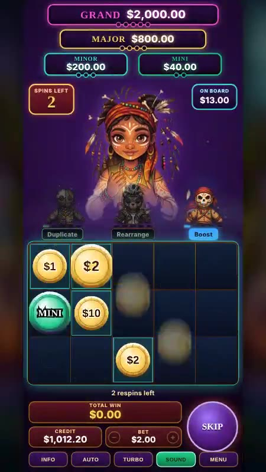
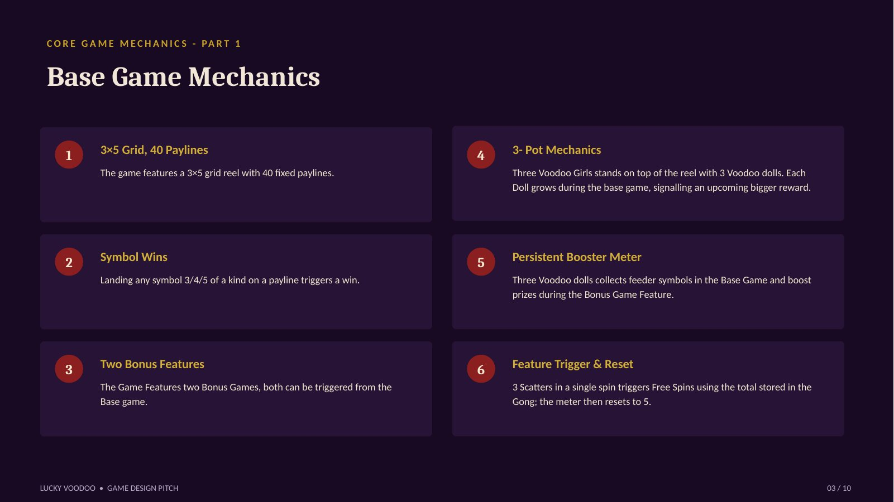
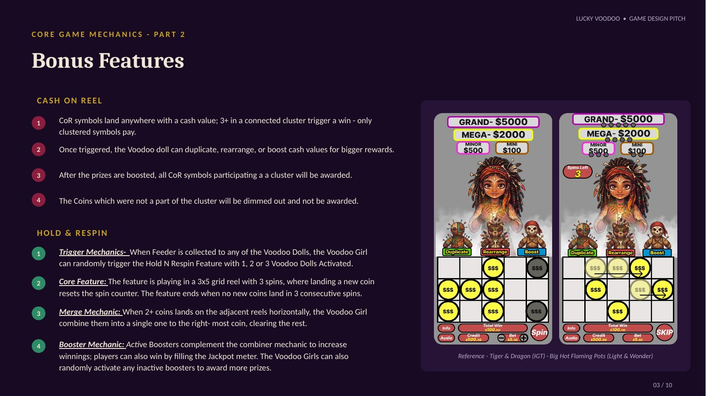
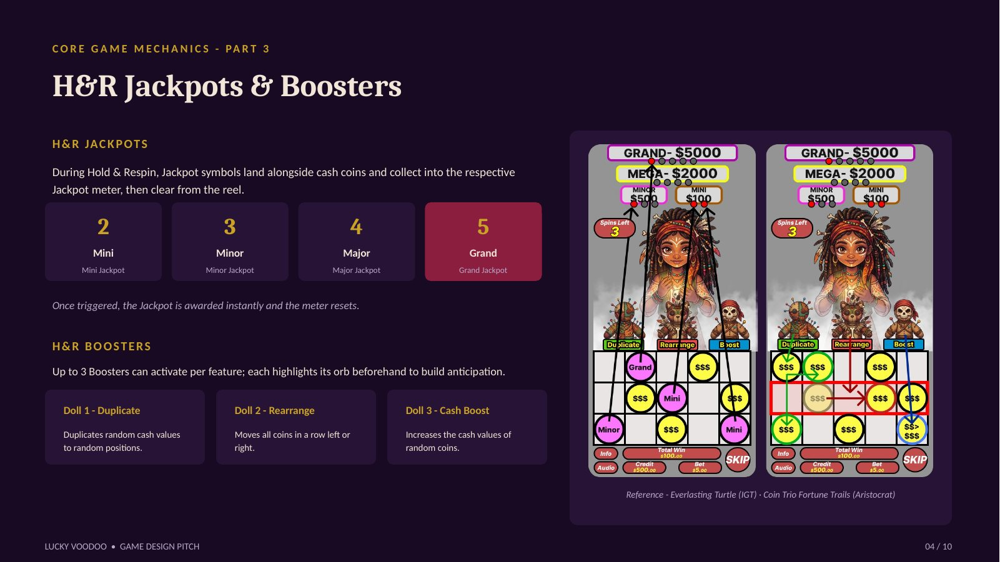
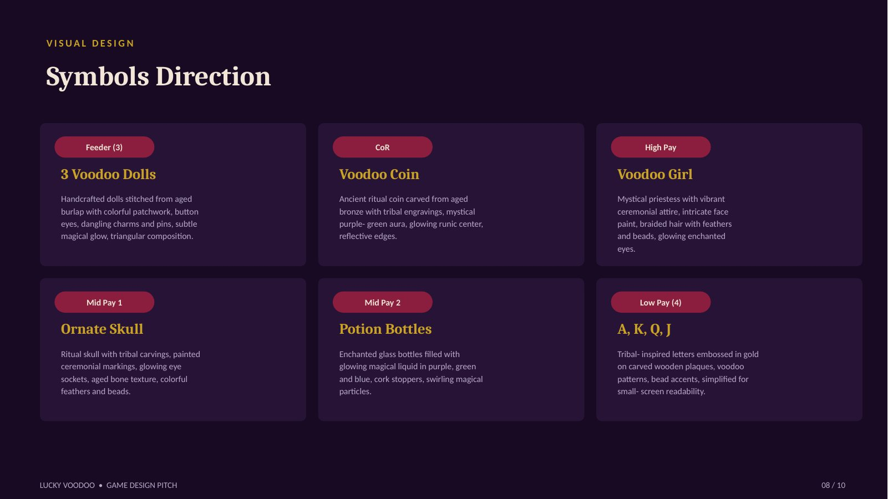
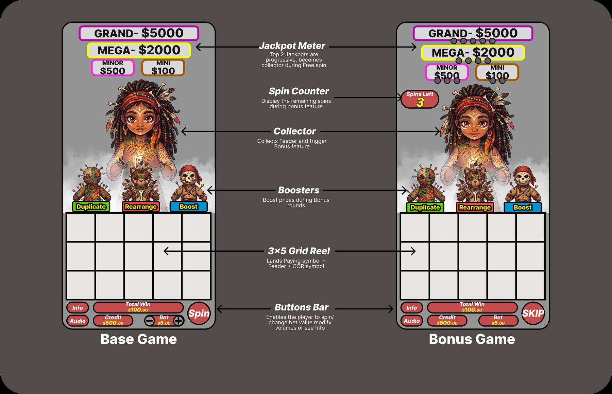
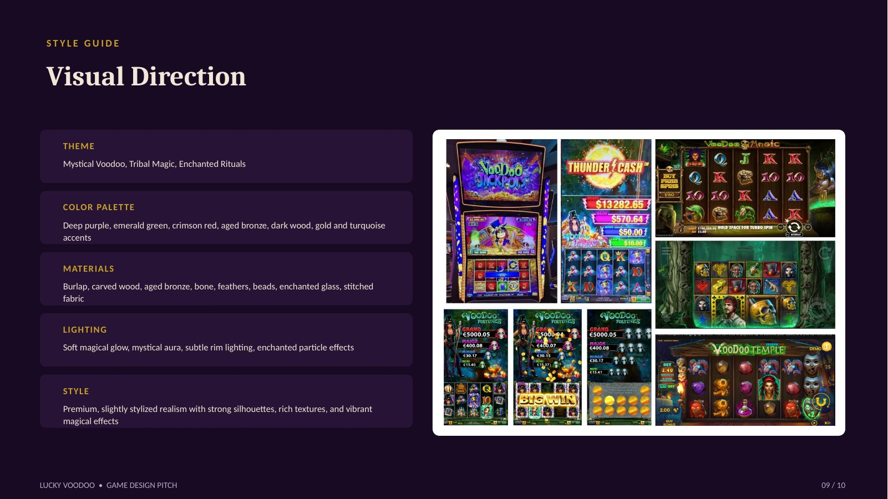

Lucky Voodoo
Three dolls. One board. Four jackpots.
Concept
A 3×5, 40-payline slot built around three voodoo dolls. Doll feeders land anywhere and level up their doll (up to 5); each collection may trigger Hold & Respin, with higher-level dolls making it more likely. Voodoo Coins in a cluster of three or more start Cash on Reel, where a doll casts Duplicate, Rearrange or Boost on the coins. Four jackpots (Mini, Minor, Major, Grand) sit on top for a 5,000× ceiling.
My role
Principal designer: the doll and booster system, Cash on Reel and Hold & Respin rules, jackpot structure, symbol and style direction, the UI wireframe, and a playable browser prototype.
Prototype screens
Captured from the playable prototype.



Giving progress a face
Collector slots can feel like abstract bars. The design question was how to make the build-up feel like something the player is doing to a character.
- 01
Three dolls, three personalities
DecisionThe board is built around three voodoo dolls, each with its own level up to 5. Doll feeders land anywhere and level up their doll.
WhyCharacters are easier to follow than counters. The player knows which doll is rising and cheers for it.
Trade-offThree trackers is the most I wanted on screen at once.
- 02
Let levels change the odds, not guarantee
DecisionEach collection may trigger Hold & Respin, and higher-level dolls make it more likely.
WhyStaying with a doll is rewarded, but nothing is certain. It keeps the build-up meaningful without turning the feature into a countdown.
- 03
Three coins start the feature
DecisionVoodoo Coins in a cluster of three or more start Cash on Reel.
WhyA cluster is easy to read as a near-miss, so the player sees how close they were. It also makes the trigger a visible event on the grid.
- 04
Three boosters, three verbs
DecisionIn Cash on Reel a doll casts Duplicate, Rearrange or Boost on the coins.
WhyEach booster is a different kind of hope: more coins, better positions or bigger values. The player reads the coin board differently depending on which doll acts.
Trade-offI kept the list to three so each is easy to remember and tell apart.
- 05
A jackpot ladder as the horizon
DecisionMini, Minor, Major and Grand sit on top, for a 5,000× ceiling.
WhyThe ladder gives every Hold & Respin a top-end to chase, and the tiers keep smaller wins meaningful.
- 06
40 fixed lines on a 3×5 grid
DecisionThe board has 40 fixed paylines.
WhyFixed lines keep the base game simple to read so the dolls and coins carry the interest.
Design documentation




Three dolls that grow toward a bigger reward
| Rule | How it works |
|---|---|
| 3×5 grid, 40 paylines | Three, four or five of a kind on a payline wins. |
| Three dolls | Three Voodoo Girls stand on top of the reels with three dolls; each doll grows during the base game, signalling a bigger reward. |
| Persistent booster meter | The dolls collect feeder symbols in the base game and boost prizes in the bonus. |
| Two bonus features | Both can be triggered from the base game. |
Clusters pay, and the dolls boost them
| Step | What happens |
|---|---|
| Land | Coins land anywhere with a cash value. |
| Cluster | 3 or more in a connected cluster trigger a win; only clustered coins pay. |
| Boost | A doll can duplicate, rearrange or boost the cash values. |
| Award | All coins in a cluster are awarded; coins outside it dim out and pay nothing. |
Three spins, reset by every new coin
| Part | How it works |
|---|---|
| Trigger | When a Feeder reaches any doll, the Voodoo Girl can randomly start the feature with 1, 2 or 3 dolls activated. |
| Core | A 3×5 grid with 3 spins; landing a new coin resets the counter. It ends when no new coin lands in 3 consecutive spins. |
| Merge | When 2 or more coins land on adjacent reels, they combine into a single coin on the right-most position. |
| Boosters | Active boosters add to the combine effect, and the Voodoo Girls can randomly activate inactive boosters for more prizes. |
Four jackpots, three dolls
Jackpot symbols land beside the cash coins and fill the matching meter. Once a meter fills, the jackpot is awarded instantly and the meter resets. Up to three boosters can activate per feature, each highlighting its orb beforehand to build anticipation.
| Jackpot | Symbols to fill |
|---|---|
| Mini | 2 |
| Minor | 3 |
| Major | 4 |
| Grand | 5 |
Doll 1 duplicates random cash values to random positions. Doll 2 moves all coins in a row left or right. Doll 3 increases the cash values of random coins.
Mystical voodoo, tribal magic, enchanted rituals
Deep purple, emerald green, crimson red, aged bronze, dark wood, with gold and turquoise accents. Materials are burlap, carved wood, bone, feathers, beads and enchanted glass, lit with a soft magical glow. Symbols: three Voodoo Dolls as feeders, the Voodoo Coin, the Voodoo Girl as the high pay, a skull and potion bottles as mid pays, and A, K, Q, J as low pays.
Screens, flows and layout

